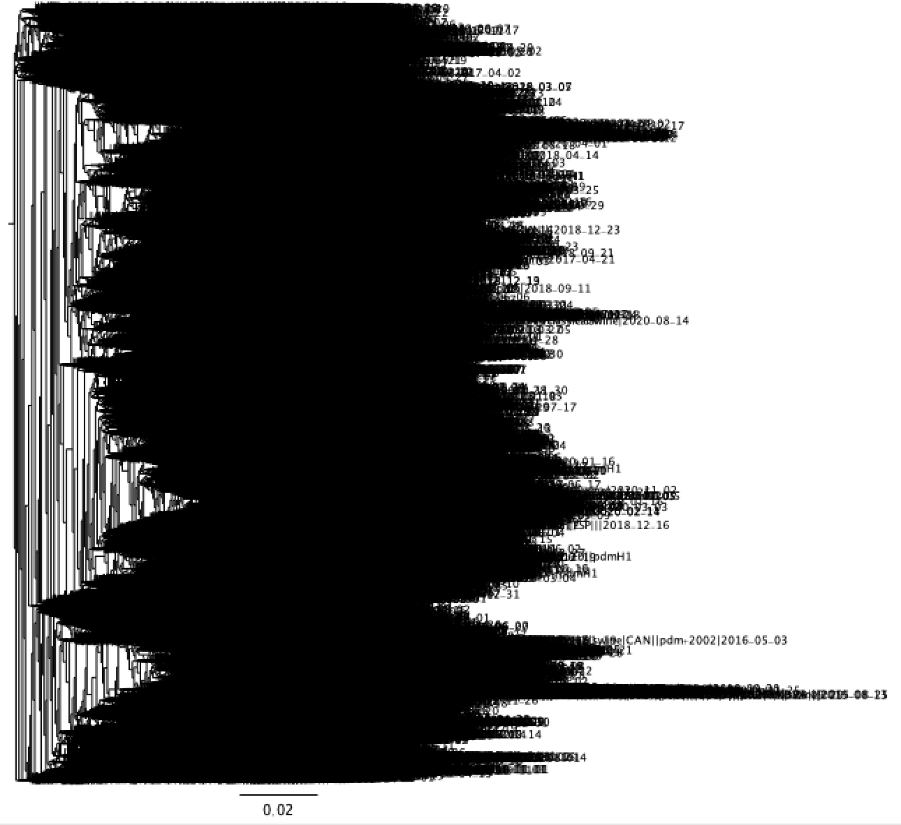
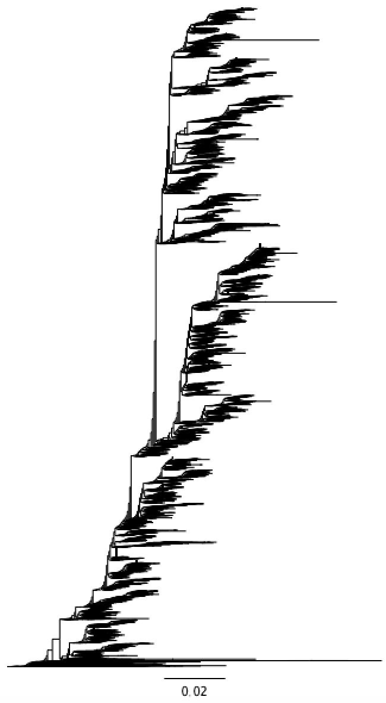
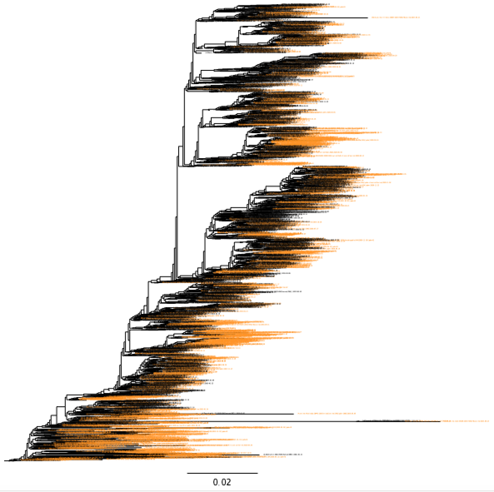

Our data and how to manage it
1. The OctoFLU Database
The OctoFLU Database is a platform for storing, curating, and integrating all our data. It is built on the GraphDB database (http://graphdb.ontotext.com/).
The database can be accessed either through the graphical user interface or the
octofludb command line utility. The latter approach is strongly recommended
and will be the only approach I discuss in the future sections.
1.1. Installation
The free version of GraphDB can be downloaded and installed from the website.
octofludb can be installed through pip:
pip install octofludb
You may need to replace pip with pip3, depending on your setup.
1.2. Database management with the octofludb utility
Documentation for all subcommands in octofludb can be accessed by calling
octofludb -h. Subcommand documentation can be accessed with octofludb
<subcommand> -h.
Once GraphDB is installed on your system, you can initialize an empty repo with
octofludb init.
1.3. Getting data
A local database can be accessed by submitting SPARQL queries. A SPARQL script specifies a pattern over a graph and when given to the database will print a row of data for every occurrence of the pattern.
Below is a very simple script that returns the strain names of every gamma:
PREFIX f: <https://flu-crew.org/term/>
SELECT ?name
WHERE {
?sid f:strain_name ?name .
?sid f:host "swine" .
?sid f:has_segment ?gid .
?gid f:clade "gamma" .
}The PREFIX line defines an abbreviatin, f, for the long URI
https://flu-crew.org/term/. While the URI looks like a web link, it does not
need to point to a real web page (although it may, and that is a good place to
put documentation). Every edge type defined specifically for OctofluDB has this
prefix.
The SELECT term is followed by a list of all the columns we want printed out for us, in this case just one.
?sid f:strain_name ?name . is a graph pattern restricting the returned data
to things related to eachother by the f:strain_name predicate. Words that
begin with ? are variables. There is nothing special about ?sid and
?name, these variables could be named anything. By convention, I normally use
?sid for a *s*train *id*entifier and ?gid for a *g*enbank *id*enditifer.
Every statement must end with a ., otherwise GraphDB will spill out a very
ugly error statement.
?sid f:has_segment ?gid . links our strain node to its child segment node.
This particular link will appear in many queries.
?gid f:clade "gamma" links the segment to the literal string value "gamma" by the f:clade relation.
The query can be sent to the database with the command:
octofludb query fetch-gammas.rq
The extension .rq is convention for SPARQL scripts.
1.4. Deleting data
I will describe how to delete data with a few examples.
1.4.1. delete one link
To understand the need for deleting data, you should know a little about how graph databases handle conflicting data. Data uploaded to GraphDB consists of many "triples", where a triple consists of a subject, a predicate (relationship), and an object. That is, a triple specifies a single edge in the graph.
For example, suppose we have an edge in the database linking the HA segment EPI_123456 to the clade "gamma". Then suppose we want to instead link it to the more specific clade "gamma.3". If we upload the new triple, however, the original link "gamma" is not removed, instead we end up with the segment being linked to both "gamma" and "gamma.3". The database doesn’t magically know that the relation "clade" should always be one-to-one. So if we want only the clade "gamma.3", we will need to delete the original clade.
The following SPARQL command will do what we want:
PREFIX f: <https://flu-crew.org/term/>
DELETE {
?gid f:epi_id "EPI_123456" .
?gid f:clade "gamma" .
}This deletion script can be written to a file, delete-clade.rq, and executed
on the local database with octofludb update delete-clade.rq.
1.4.2. delete many links
This example expands on the prior example and introduces a more powerful technique for deleting data.
In the August OFFLU report process, we updated the octoFLU reference files to better represent the global H3 clades. If we directly upload the new H3 clades to octofludb, then we will end up with duplicate records. So we must first delete all prior non-USA H3 clades. The SPARQL deletion statement for this is shown below.
PREFIX f: <https://flu-crew.org/term/>
DELETE {
?gid f:clade ?clade .
?gid f:gl_clade ?gl_clade .
}
WHERE {
?sid f:strain_name ?strain_name .
?sid f:country/f:code ?country .
?sid f:host "swine" .
FILTER (?country != "USA") .
?sid f:subtype ?subtype .
FILTER REGEX(?subtype, "H3") .
?sid f:has_segment ?gid .
?gid f:segment_name "HA" .
OPTIONAL { ?gid f:clade ?clade . }
OPTIONAL { ?gid f:gl_clade ?gl_clade . }
}The WHERE clause defines a set of triples and the DELETE clause specifies which of these triples should be removed.
This command should be written to a file (say, delete-global-H3-clades.rq)
and then can be applied to the local database with the command:
octofludb update delete-global-H3-clades.rq
It is generally good practice to check before we delete. For example, if we
accidentally added the triple ?sid f:has_segment ?gid to the DELETE clause,
then we would delete the links from strains to segments. An easy way to check
what will be deleted is to create the corresponding query statement:
PREFIX f: <https://flu-crew.org/term/>
SELECT *
WHERE {
....
}With the WHERE clause being the same as before. The calling octofludb query
to get a table showing all cases where clade info will be deleted.
1.5. Uploading data
There are three basic steps to uploading data to the database.
The first is to prepare the raw data in the "proper" way.
The second step is to convert the raw data to the turtle-format GraphDB
understands. This is done through the mk_* commands in octofludb. These
commands do more than just translate the data, they use specialized parsers to
extract flu specific information from the data. For example, if
The third step is to upload the turtle files to the database. If you are
working with a local database, this step is easy: octofludb upload
<turtle-fiels>.
1.6. recipes
Recipe functions are data synthesis functions that are built into octofludb.
They will be added on an as-needed database.
-
masterlist- generate a table of data describing all A0 strains. This is the base table used byoctoflushowand to generate quarterly reports.
Methods for sampling and coloring trees
2. Methods for manipulating trees
I will describe methods here through a series of examples.
2.1. Pandemic H1 - filtering down a giant clade
You have just retrieved H1 pandemic sequence from the last few years and want
to do something awesome with it. With smof, you can see how many sequences
you have:
$ smof stat pdm.fna nseq: 26802 nchars: 26257059 5sum: 1 982 982 982 991 mean(sd): 980 (29) N50: 982
Oh crap, one of our sequences has a length of 1.
$ smof filter -s 100 pdm.fna >|A/Jacarei/1495954-IAL/2020|H1N1|human|BRA|||2020-02-29 a >|A/Presidente_Venceslau/1261099-IAL/2019|H1N1|human|BRA|||2019-08-13 a >|A/Goiania/1435-IAL/2019|H1N1|human|BRA|||2019-09-07 c >|A/Sao_Paulo/167/2016|H1N1|human|BRA|||2016-01-04 g >|A/Sao_Paulo/725017/2018|H1N1|human|BRA|||2018-02-27 g
The HAs were trimmed to the HA1 region, so these sequences are simply truncated sequences. We can either filter them out or change our methods to not trim. I’ll go with the third option of leaving them in and building the tree (since this is the tree section).
$ mafft pdm.fna | FastTree -nt -gamma -gtr > pdm.tre
This will take awhile to run, since there are nearly 27 thousand strains. The result tree is shown below.

We want to root it on California/07/2009 and then sort it. This can be done
with the treebender utility from the phylommand package
(https://github.com/RybergGroup/phylommand):
$ treebender --outgroup_root "vaccine|A/California/07/2009|human" pdm.tre | treebender --ladderize > pdm2.tre
The outgroup name needs to be an exact match against the tip label. The result is much cleaner:

But this tree is far too large for our purposes. We need to subsample. However,
since we are interested in human-swine transmission, we need to preserve the
overall topology of the tree with respect to the two species. If we just
sampled 5% of the tips, we would loose most of the non-persisting spill-over
cases. smot can sample for us while preserving the topology.
smot sample para --keep "swine" --seed 42 -p 0.02 --min-tips=3 --factor-by-capture="(human|swine)" pdm2.tre > pdm3.tre
This yields a much more manageable tree with only 2643 tips. The black and orange represent human and swine sequences, respectively.

If you just want to see the swine, smot can grep them out:
smot grep "swine" pdm3.tre > pdm-swine.tre
Or if you want to remove the private VDL sequences:
smot grep -v "VDL" pdm3.tre > pdm-no-vdl.tre
Methods for working with sequence data
3. smof - Simple Manipulation Of Fasta
smof is a broad set of CLI tools for working with fasta files. It can be
installed through pip:
pip install smofIf you are on a MacOS, you may need to use pip3 instead. smof works on
Linux, MacOS, and Windows. The only dependency is Python v3.4 or greater.
A summary of the tools it includes can be accessed by calling smof -h in the
terminal. Here is the usage statement (as of v0.19.0):
usage: <fastafile> | smof <subcommand> <options>
Tools for studying and manipulating fasta files
optional arguments:
-h, --help show this help message and exit
-v, --version show program's version number and exit
subcommands:
[ for help on each: smof <subcommand> -h ]
cut emulates UNIX cut command, where fields are entries
clean cleans fasta files
consensus finds the consensus sequence for aligned sequence
filter extracts sequences meeting the given conditions
grep roughly emulates the UNIX grep command
md5sum calculate an md5 checksum for the input sequences
head writes the first sequences in a file
permute randomly order sequence
reverse reverse each sequence (or reverse complement)
sample randomly select entries from fasta file
sniff extract info about the sequence
sort sort sequences
split split a fasta file into smaller files
stat calculate sequence statistics
subseq extract subsequence from each entry (revcomp if a<b)
tail writes the last sequences in a file
translate translate a DNA sequence into a protein sequence
uniq count, omit, or merge repeated entries
wc roughly emulates the UNIX wc command
Project site: https://github.com/incertae-sedis/smof
Report bugs/requests via https://github.com/incertae-sedis/smof/issues
Author: Zebulun Arendsee (zbwrnz@gmail.com)
Detailed information about each subcommand can be accessed with smof
<subcommand> -h, for example:
$ smof stat -h
usage: <fastafile> | smof stat <options>
The default action is to count the lengths of all sequences and output summary
statistics including: 1) the number of sequences, 2) the number of characters,
3) the five-number summary of sequence lengths (minimum, 25th quantile, median,
75th quantile, and maximum), 4) the mean and standard deviation of lengths, and
5) the N50 (if you don't know what that is, you don't need to know).
positional arguments:
INPUT input fasta sequence (default = stdin)
optional arguments:
-h, --help show this help message and exit
-d DELIMITER, --delimiter DELIMITER
output delimiter
-q, --byseq write a line for each sequence
-I, --case-sensitive match case
-m, --count-lower count the number of lowercase characters
-c, --counts write counts of all characters
-t, --type guess sequence type
-l, --length write sequence length
-p, --proportion write proportion of each character
-C, --aa-profile display protein profile
-g, --hist write ascii histogram of sequence lengths
-G, --log-hist write ascii histogram of sequence log2 lengths
For more information on smof, visit the repo at url:[https://github.com/incertae-sedis/smof].
While smof may have an overwelming number of features, there are just a few
that you will be likely to use in day-to-day influenza analysis. I will
introduce just a few below.
-
smof stat- I use this all the time to just count the sequences in a fasta file and check for oddly-sized entries. -
smof sniff- The output for this one is a bit cryptic (seesmof sniff -h), but it will tell you if there are repeated sequences, how many of the sequences appear to be DNA or protein, whether there are internal stops in a protein sequence, and whether any sequences contain illegal characters. It is a good idea to run a FASTA file through sniff just to be sure went South in your (or someone elses) scripting. -
smof translate -f- Translate the longest coding frame. This works perfectly for translating flu segments to proteins. Before usingsmoffor this purpose, we had to manually align sequences in Geneious, trim them, and then translate them.-
-c- add this flag want the untranslated codon sequence -
-s- add this flag if you want the translation to begin with a START codon
-
-
smof uniq -f- If any entries have duplicate headers, keep only the first. Some programs, such as FastTree, will die if there are any duplicate headers. This command is a fast-and-dirty way to remove these duplicates. -
smof uniq -p -z ""- Combine entries with identical sequence by concatenating the headers. I use '' as the header separater since it is easy to see and unlikely to appear in a normal header. Often I will grep out the combined headers grep '___' myfile.fasta to see what has been combined. Then I may either remove the duplicate header info (sed 's/_.*//') or open the fasta in an editor and manually choose what information to include. -
smof clean -ux- Clean up a fasta file, remove any inserted gaps, wrap at 80 characters, convert to uppercase, remove any Windows carriage returns. For DNA sequence, I usually runsmof clean -t n -uxdr. The-t ntellssmofthat the sequence is nucleotides, the-dflag will convert 'X' to 'N' and irregular gaps ('.' or '_') to regular gaps '-', and the-rcommand converts ambiguous nucleotides toN(don’t do this if you intend to translate the sequence, sincesmof translatewill use ambiguous nucleotides to yield an unambiguous amino acid, when possible). -
smof consensus- Create the consensus sequence of an alignment. -
smof grep -P- Extract entries that match a pattern against the header. For example,smof grep -P "2020-..-.." myfile.fnawill extract entries from the year 2020. -
smof grep -q- Extract entries or regions that match a pattern in the sequence. There are many, many options for smof sequence grep and I use most of them regularly. For more details, I would recommend you visit the smof home page.
4. Motif extraction
Amino acid motifs are frequently of interest. Examples include the antigenic motifs of HA [1]. The HA1 and HA2 subunits of the HA gene can also be thought of as motifs that we may want to extract from a sequences.
Motifs may be extracted if we know the motif pattern in a reference gene and then align this reference against other sequences. Then we can manually trim the alignment (e.g., in Geneious) to get just the motif for each sequence.
This manual approach can be automated, as follows:
-
Align many sequences (along with references).
-
Use a regular expression to find the location of the HA1 region in a subset of the sequences.
-
Extract this location from each sequence in the alignment
This approach is very robust against deviation from the expected HA1 pattern encoded in the regular expression. So long as the expression matches the correct HA1 region more often than it matches any particular other region, then the correct region will be extracted.
Using MAFFT for alignment and smof for sequence manipulation, this process
can be accomplished as follows:
# translate the longest coding sequence (initial ATG is not required)
smof translate -f flu.fna > flu.faa
# align the protein sequences
mafft flu.faa > flu.aln
# extract the positions of $MOTIF as a GFF file
smof grep -qgoP --gff $MOTIF flu.faa > flu-motif.gff
# find the most common interval that $MOTIF matches
bounds=$(cut -f4,5 flu-motif.gff | sort | uniq -c | sort -rg | head)
# extract the most common interval from the alignment
smof subseq -b $bounds flu.aln > motif.faa5. flutile - specialized tools for influenza
flutile is a python package and command line utility that, like smof, can
be installed through pip: pip install flutile (maybe use pip3 on MacOS).
5.1. HA1 extraction
Publicly available HA segment sequences are inconsistent with regards to what part of the gene the include. Some include DNA before the start codon, some begin at the start codon, some begin after the start codon. This variety introduces non-biological noise into phylogenetic studies. Furthermore, the HA protein is processed after translation to remove the initial signal peptide and to cut the protein into two subunits, HA1 and HA2. For phylogenetic work, we usually focus on HA1. For more consistent phylogenetic results, it is good practice to trim the HA DNA sequences to the part that codes for HA1.
flutile trim can extract HA1 regions for H1 and H3 sequences (handling for
the other HA subtypes could be easily added given a reference strain and
motifs). flutile finds the HA1 by aligning the input sequences against the
reference sequence (California/07/2009) and then extracting from the alignment
the regions that map to the reference HA1. This will correctly find HA1 regions
even if they are truncated. Here are a few examples:
# DNA input to AA HA1 flutile trim h1-ha1 --conversion=dna2aa myfile.fna # DNA input to DNA output flutile trim h1-ha1 --conversion=dna2dna myfile.fna # AA input to AA output flutile trim h1-ha1 --conversion=aa2dna myfile.faa
For tree building, the --conversion=dna2dna option is strongly recommended.
To build a gamma tree from the octoFLU reference file, for example, we might use the following command:
cat reference.fa | # open the reference file smof grep 1A.3.3.3 | # extract the strains with a gamma HA smof grep "|H1|" | # extract the H1's flutile trim h1-ha1 --conversion=dna2dna | # trim to HA1 region mafft /dev/stdin | # realign the DNA FastTree -nt -gtr -gamma > gamma.tre
The realignment is needed since the alignment flutile makes internally is of
translated inputs against the protein reference.
5.2. flutile and aadiff table generation
flutile aadiff takes a multiple-sequence alignment as an input and creates a
character difference table. This command is designed for preparing amino acid
difference tables. Below is an example of a comparison of 4 H1 sequences.
flutile aadiff --subtype=H1 mufile.faa
| site | A02479030 | SD0246 | SD0272 | SD0136 |
|---|---|---|---|---|
-3 |
A |
T |
||
-2 |
N |
S |
||
-1 |
A |
T |
||
1 |
D |
|||
154 |
K |
|||
154+1 |
- |
X |
||
154+2 |
- |
X |
||
155 |
D |
S |
X |
|
156 |
D |
G |
N |
X |
The --subtype=H1 argument tells flutile to align the inputs against an H1
reference (A/United Kingdom/1/1933). The reference is used to determine
relative indices (the sites column). The index reference is used only for
indexing and does not appear in the final table. The first three rows (sites
-3, -2, -1) align to the three residues at the end of the signal peptide. Site
1 is the first residue in the mature peptide. Any gaps in the reference
alignment are indexed as <ref_id>+<offset>, for example 154+1 and 154+2 are
positions 1 and 2 residues after the reference position 154. flutile uses the
references from [2] (summarized in table below).
| subtype | strain name | signal peptide | mature peptide start |
|---|---|---|---|
H1 |
A/United Kingdom/1/1933 |
MKARLLVLLCALAATDA |
DTICIGYHANNS |
H2 |
A/Singapore/1/1957 |
MAIIYLILLFTAVRG |
DQICIGYHANNS |
H3 |
A/Aichi/2/1968 |
MKTIIALSYIFCLPLG |
QDLPGNDNSTATLCLGHHAVPN |
H4 |
A/swine/Ontario/01911–2/1999 |
MLSIAILFLLIAEGSS |
QNYTGNPVICLGHHAVSN |
H5 |
A/Vietnam/1203/2004 |
MEKIVLLFAIVSLVKS |
DQICIGYHANNS |
H6 |
A/chicken/Taiwan/0705/1999 |
MIAIIVIATLAAAGKS |
DKICIGYHANNS |
H7 |
A/Netherlands/219/2003 |
MNTQILVFALVASIPTNA |
DKICLGHHAVSN |
H8 |
A/turkey/Ontario/6118/1968 |
MEKFIAIAMLLASTNA |
YDRICIGYQSNNS |
H9 |
A/swine/Hong Kong/9/1998 |
MEAASLITILLVVTASNA |
DKICIGYQSTNS |
H10 |
A/mallard/bavaria/3/2006 |
MYKIVVIIALLGAVKG |
LDKICLGHHAVAN |
H11 |
A/duck/England/1/1956 |
MEKTLLFAAIFLCVKA |
DEICIGYLSNNS |
H12 |
A/duck/Alberta/60/1976 |
MEKFIILSTVLAASFA |
YDKICIGYQTNNS |
H13 |
A/gull/Maryland/704/1977 |
MALNVIATLTLISVCVHA |
DRICVGYLSTNS |
H14 |
A/mallard/Astrakhan/263/1982 |
MIALILVALALSHTAYS |
QITNGTTGNPIICLGHHAVEN |
H15 |
A/duck/Australia/341/1983 |
MNTQIIVILVLGLSMVRS |
DKICLGHHAVAN |
H16 |
A/black-headed-gull/Turkmenistan/13/1976 |
MMIKVLYFLIIVLGRYSKA |
DKICIGYLSNNS |
H17 |
A/little-yellow-shouldered bat/Guatemala/060/2010 |
MELIILLILLNPYTFVLG |
DRICIGYQANQN |
H18 |
A/flat-faced bat/Peru/033/2010 |
MITILILVLPIVVG |
DQICIGYHSNNS |
-
The H3 signal peptide appears to actually be
MKTIIALSYIFCLALG
subtype |
reference |
flag |
description |
H1 |
[3] |
|
antigenic sites |
H3 |
[4] |
|
antigenic sites |
5.3. flutile and indexing
The reference strains selected by [2] may be used for indexing HA, but no comparable study has been done for NA or the internal genes.
Indels are rather rare in the internal genes (with the interesting exception of NS), so the genes are covered well with a single reference. I chose the H1N1 A/Puerto_Rico/8/1934 (EPI_ISL_146807) for this role since it 1) has a complete genome sequence with no ambiguous residues and 2) has been the subject of extensive structural research.
I retrieved all available public WGS data including around 70000 to 80000 sequences for each internal gene. For each segment (other than NS) the 1st, 2nd and 3rd quantiles were all equal (indicating at least 50% of the strains in each group are of exactly the same length). The lengths of the translated A/Puerto_Rico/8/1934 segments exactly matched these quantiles. For NS, the translated product matched the 2nd quantile value (the median).
So overall, while A/Puerto_Rico/8/1934 may be very different in sequence from modern strains, it will work fine as an index reference.
5.4. flutile and motif extraction
flutile can also use these subtype reference to extract HA motifs relative to
Burke2014 numbering.
For example, to exact the classical H1 antigenic motifs:
flutile trim motif --conversion=dna2aa --subtype=H1 \ -m "Sa=124-125,153-157,159-164" \ -m "Sb=184-195" \ -m "Ca1=166-170,203-205,235-237" \ -m "Ca2=137-142,221-222" \ -m "Cb=70-75" myseqs.fna
Data Visualization
6. octoflushow
Clade inference
7. octoFLU
Standard Reports
8. quarterly report
Whole Genome Sequencing monthly selection
9. offlu
Literature
10. Biology papers
11. Method papers
Glossary
Add any terms likely to be unfamiliar to new team members
References
[1] S. T. H. Liu, M. A. Behzadi, W. Sun, A. W. Freyn, W.-C. Liu, F. Broecker, R. A. Albrecht, N. M. Bouvier, V. Simon, R. Nachbagauer, & others, Antigenic sites in influenza H1 hemagglutinin display species-specific immunodominance. The Journal of clinical investigation, 128 (2018) 4992–4996.
[2] D. F. Burke & D. J. Smith, A recommended numbering scheme for influenza A HA subtypes. PloS one, 9 (2014) e112302.
[3] A. J. Canton, The antigenic structure of the influenza virus A/PR/8/34 hemagglutinin (H1 subtype). Cell, 31 (1982) 417–427.
[4] D. C. Wiley, I. A. Wilson, & J. J. Skehel, Structural identification of the antibody-binding sites of Hong Kong influenza haemagglutinin and their involvement in antigenic variation. Nature, 289 (1981) 373–378.